| Order | Example | Sample Trait |
|---|---|---|
| Insectivora |
mole 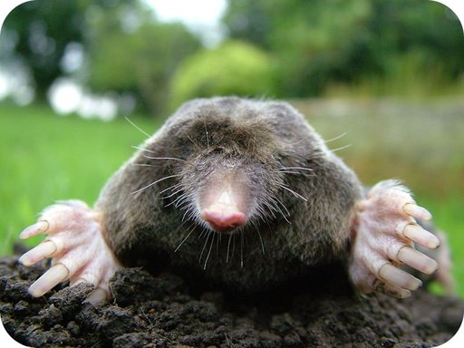 |
small sharp teeth |
| Edentata |
anteater 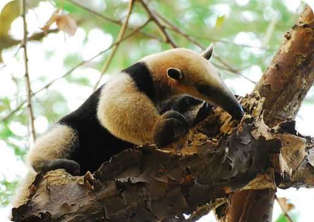 |
few or no teeth |
| Pholidota |
pangolin 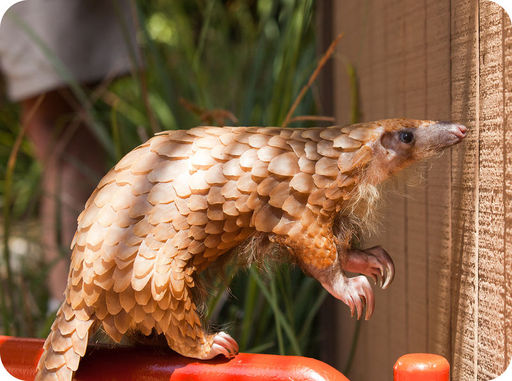 |
large plate-like scales |
| Chiroptera |
bat 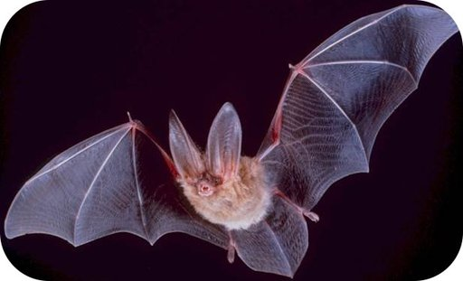 |
digits support membranous wings |
| Carnivora |
coyote 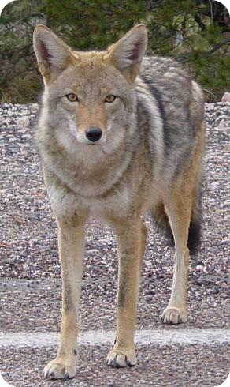 |
long pointed canine teeth |
| Rodentia |
mouse 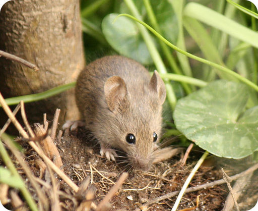 |
incisor teeth grow continuously |
| Lagomorpha |
rabbit 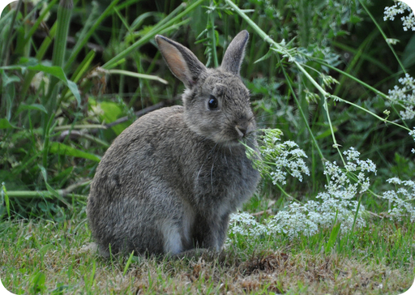 |
chisel-like incisor teeth |
| Perissodactyla |
horse 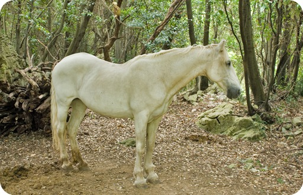 |
odd-toed hooves |
| Artiodactyla |
deer 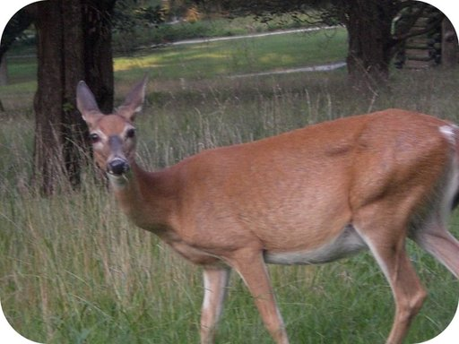 |
even-toed hooves |
| Cetacea |
whale 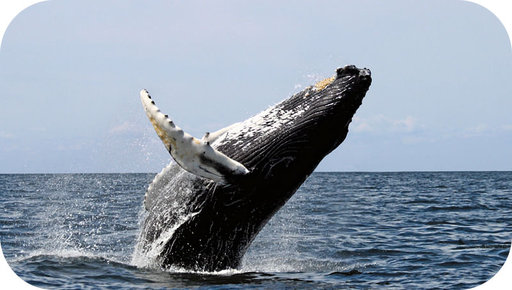 |
paddle-like forelimbs |
| Primates |
monkey 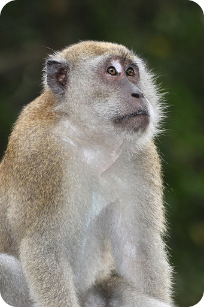 |
five digits on hands and feet |
| Proboscidea |
elephant 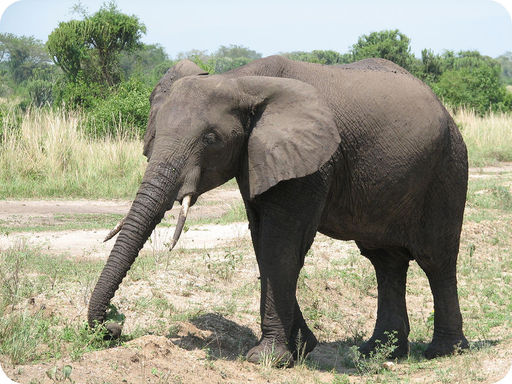 |
tusks |
| Hyracoidea |
hyrax 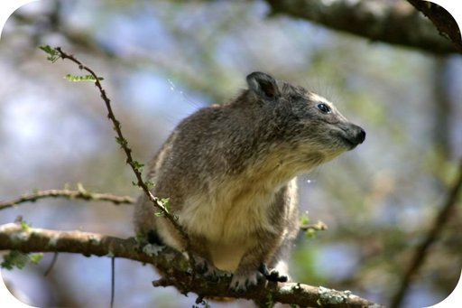 |
rubbery pads on feet |
| Dermoptera |
colugo 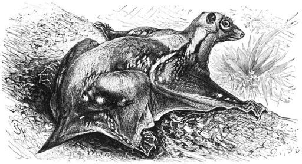 |
membrane of skin between legs for gliding |
| Pinnipedia |
seal 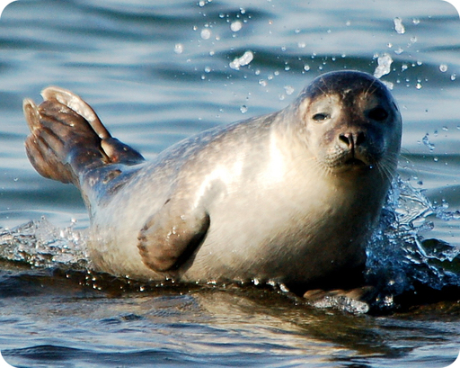 |
feet with fins |
| Sirenia |
manatee 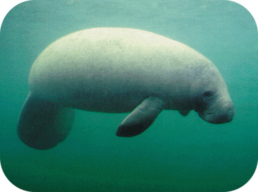 |
paddle-like tail |
| Tubulidentata |
aardvark 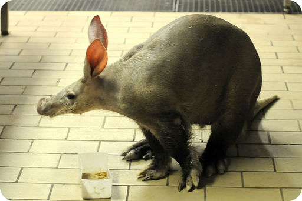 |
teeth without enamel |